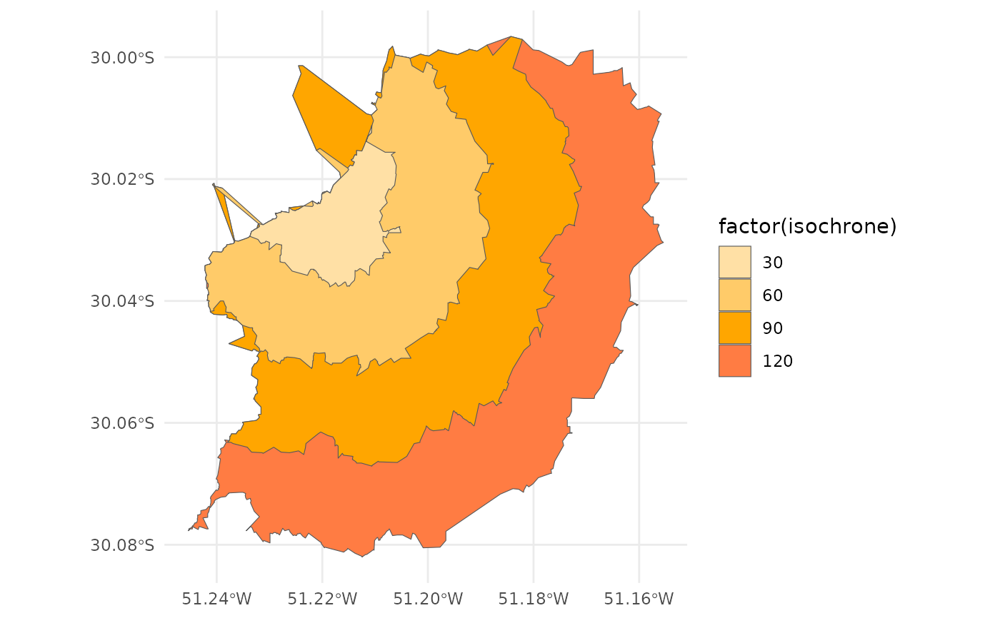

Fast computation of isochrones from a given location. The function estimates isochrones based on the travel times from the trip origin to all nodes in the road network.
isochrone(
r5r_core,
origins,
mode = "transit",
mode_egress = "WALK",
cutoffs = c(0, 15, 30),
sample_size = 0.8,
departure_datetime = Sys.time(),
time_window = 10L,
max_walk_time = Inf,
max_bike_time = Inf,
max_car_time = Inf,
max_trip_duration = 120L,
walk_speed = 3.6,
bike_speed = 12,
max_rides = 3,
max_lts = 2,
draws_per_minute = 5L,
n_threads = Inf,
verbose = FALSE,
progress = TRUE
)An object to connect with the R5 routing engine, created with
setup_r5().
Either a POINT sf object with WGS84 CRS, or a
data.frame containing the columns id, lon and lat.
A character vector. The transport modes allowed for access,
transfer and vehicle legs of the trips. Defaults to WALK. Please see
details for other options.
A character vector. The transport mode used after egress
from the last public transport. It can be either WALK, BICYCLE or
CAR. Defaults to WALK. Ignored when public transport is not used.
numeric vector. Number of minutes to define the time span of
each Isochrone. Defaults to c(0, 15, 30).
numeric. Sample size of nodes in the road network used to
estimate isochrones. Defaults to 0.8 (80% of all nodes in the
transport network). Value can range between 0.2 and 1. Smaller
values increase computation speed but return results with lower
precision.
A POSIXct object. Please note that the departure
time only influences public transport legs. When working with public
transport networks, please check the calendar.txt within your GTFS
feeds for valid dates. Please see details for further information on
how datetimes are parsed.
An integer. The time window in minutes for which r5r
will calculate multiple travel time matrices departing each minute.
Defaults to 10 minutes. The function returns the result based on
median travel times. Please read the time window vignette for more
details on its usage vignette("time_window", package = "r5r")
An integer. The maximum walking time (in minutes) to
access and egress the transit network, or to make transfers within the
network. Defaults to no restrictions, as long as max_trip_duration
is respected. The max time is considered separately for each leg (e.g.
if you set max_walk_time to 15, you could potentially walk up to 15
minutes to reach transit, and up to another 15 minutes to reach the
destination after leaving transit). Defaults to Inf, no limit.
An integer. The maximum cycling time (in minutes) to
access and egress the transit network. Defaults to no restrictions, as
long as max_trip_duration is respected. The max time is considered
separately for each leg (e.g. if you set max_bike_time to 15 minutes,
you could potentially cycle up to 15 minutes to reach transit, and up
to another 15 minutes to reach the destination after leaving
transit). Defaults to Inf, no limit.
An integer. The maximum driving time (in minutes) to
access and egress the transit network. Defaults to no restrictions, as
long as max_trip_duration is respected. The max time is considered
separately for each leg (e.g. if you set max_car_time to 15 minutes,
you could potentially drive up to 15 minutes to reach transit, and up
to another 15 minutes to reach the destination after leaving transit).
Defaults to Inf, no limit.
An integer. The maximum trip duration in minutes. Defaults to 120 minutes (2 hours).
A numeric. Average walk speed in km/h. Defaults to 3.6 km/h.
A numeric. Average cycling speed in km/h. Defaults to 12 km/h.
An integer. The maximum number of public transport rides allowed in the same trip. Defaults to 3.
An integer between 1 and 4. The maximum level of traffic stress that cyclists will tolerate. A value of 1 means cyclists will only travel through the quietest streets, while a value of 4 indicates cyclists can travel through any road. Defaults to 2. Please see details for more information.
An integer. The number of Monte Carlo draws to
perform per time window minute when calculating travel time matrices and
when estimating accessibility. Defaults to 5. This would mean 300 draws in
a 60-minute time window, for example. This parameter only affects the
results when the GTFS feeds contain a frequencies.txt table.
An integer. The number of threads to use when running the
router in parallel. Defaults to use all available threads (Inf).
A logical. Whether to show R5 informative messages when
running the function. Defaults to FALSE (please note that in such case
R5 error messages are still shown). Setting verbose to TRUE shows
detailed output, which can be useful for debugging issues not caught by
r5r.
A logical. Whether to show a progress counter when running
the router. Defaults to FALSE. Only works when verbose is set to
FALSE, so the progress counter does not interfere with R5's output
messages. Setting progress to TRUE may impose a small penalty for
computation efficiency, because the progress counter must be
synchronized among all active threads.
A POLYGON "sf" "data.frame" for each isochrone of each origin.
R5 allows for multiple combinations of transport modes. The options
include:
Transit modes: TRAM, SUBWAY, RAIL, BUS, FERRY, CABLE_CAR,
GONDOLA, FUNICULAR. The option TRANSIT automatically considers all
public transport modes available.
Non transit modes: WALK, BICYCLE, CAR, BICYCLE_RENT,
CAR_PARK.
When cycling is enabled in R5 (by passing the value BIKE to either
mode or mode_egress), setting max_lts will allow cycling only on
streets with a given level of danger/stress. Setting max_lts to 1, for
example, will allow cycling only on separated bicycle infrastructure or
low-traffic streets and routing will revert to walking when traversing any
links with LTS exceeding 1. Setting max_lts to 3 will allow cycling on
links with LTS 1, 2 or 3. Routing also reverts to walking if the street
segment is tagged as non-bikable in OSM (e.g. a staircase), independently of
the specified max LTS.
The default methodology for assigning LTS values to network edges is based on commonly tagged attributes of OSM ways. See more info about LTS in the original documentation of R5 from Conveyal at https://docs.conveyal.com/learn-more/traffic-stress. In summary:
LTS 1: Tolerable for children. This includes low-speed, low-volume streets, as well as those with separated bicycle facilities (such as parking-protected lanes or cycle tracks).
LTS 2: Tolerable for the mainstream adult population. This includes streets where cyclists have dedicated lanes and only have to interact with traffic at formal crossing.
LTS 3: Tolerable for "enthused and confident" cyclists. This includes streets which may involve close proximity to moderate- or high-speed vehicular traffic.
LTS 4: Tolerable only for "strong and fearless" cyclists. This includes streets where cyclists are required to mix with moderate- to high-speed vehicular traffic.
For advanced users, you can provide custom LTS values by adding a tag <key = "lts"> to the osm.pbf file.
r5r ignores the timezone attribute of datetime objects when parsing dates
and times, using the study area's timezone instead. For example, let's say
you are running some calculations using Rio de Janeiro, Brazil, as your study
area. The datetime as.POSIXct("13-05-2019 14:00:00", format = "%d-%m-%Y %H:%M:%S") will be parsed as May 13th, 2019, 14:00h in
Rio's local time, as expected. But as.POSIXct("13-05-2019 14:00:00", format = "%d-%m-%Y %H:%M:%S", tz = "Europe/Paris") will also be parsed as
the exact same date and time in Rio's local time, perhaps surprisingly,
ignoring the timezone attribute.
The travel_time_matrix(), expanded_travel_time_matrix() and
accessibility() functions use an R5-specific extension to the RAPTOR
routing algorithm (see Conway et al., 2017). This RAPTOR extension uses a
systematic sample of one departure per minute over the time window set by the
user in the 'time_window' parameter. A detailed description of base RAPTOR
can be found in Delling et al (2015). However, whenever the user includes
transit fares inputs to these functions, they automatically switch to use an
R5-specific extension to the McRAPTOR routing algorithm.
Conway, M. W., Byrd, A., & van der Linden, M. (2017). Evidence-based transit and land use sketch planning using interactive accessibility methods on combined schedule and headway-based networks. Transportation Research Record, 2653(1), 45-53. doi:10.3141/2653-06
Delling, D., Pajor, T., & Werneck, R. F. (2015). Round-based public transit routing. Transportation Science, 49(3), 591-604. doi:10.1287/trsc.2014.0534
options(java.parameters = "-Xmx2G")
library(r5r)
# build transport network
data_path <- system.file("extdata/poa", package = "r5r")
r5r_core <- setup_r5(data_path = data_path)
#> Using cached R5 version from /home/runner/work/_temp/Library/r5r/jar/r5-v6.9-all.jar
#>
#> Using cached network.dat from /home/runner/work/_temp/Library/r5r/extdata/poa/network.dat
# load origin/point of interest
points <- read.csv(file.path(data_path, "poa_hexgrid.csv"))
origin_1 <- points[936,]
departure_datetime <- as.POSIXct(
"13-05-2019 14:00:00",
format = "%d-%m-%Y %H:%M:%S"
)
# estimate isochrone from origin_1
iso1 <- isochrone(r5r_core,
origin = origin_1,
mode = c("walk"),
departure_datetime = departure_datetime,
cutoffs = seq(0, 100, 10)
)
head(iso1)
#> Simple feature collection with 6 features and 2 fields
#> Geometry type: POLYGON
#> Dimension: XY
#> Bounding box: xmin: -51.2488 ymin: -30.0968 xmax: -51.1743 ymax: -30.0155
#> Geodetic CRS: WGS 84
#> id isochrone polygons
#> 1 89a90128107ffff 100 POLYGON ((-51.2484 -30.0909...
#> 2 89a90128107ffff 90 POLYGON ((-51.2476 -30.086,...
#> 3 89a90128107ffff 80 POLYGON ((-51.2464 -30.081,...
#> 4 89a90128107ffff 70 POLYGON ((-51.2435 -30.078,...
#> 5 89a90128107ffff 60 POLYGON ((-51.2328 -30.078,...
#> 6 89a90128107ffff 50 POLYGON ((-51.2393 -30.0701...
colors <- c('#ffe0a5','#ffcb69','#ffa600','#ff7c43','#f95d6a',
'#d45087','#a05195','#665191','#2f4b7c','#003f5c')
plot(iso1['isochrone'], col = colors)

stop_r5(r5r_core)
#> r5r_core has been successfully stopped.